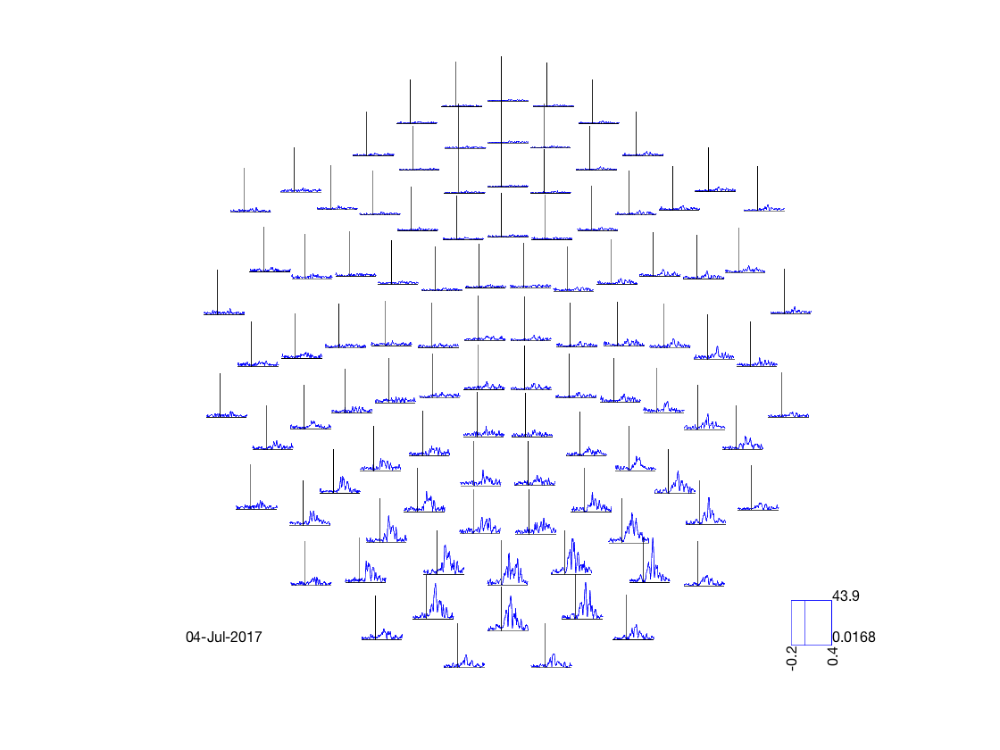
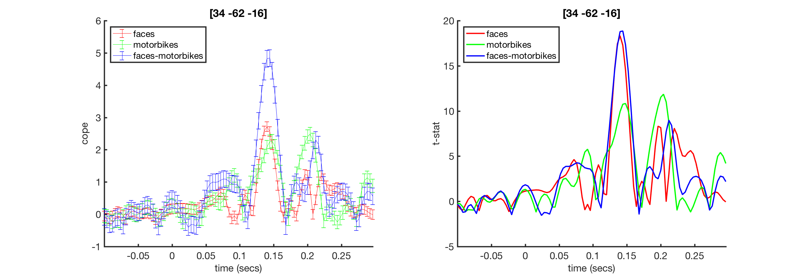

Introduction to MEG Work Experience programme
This example script is designed to be used as part of a guided 1-hour overview of MEG analysis aimed at audiences with no/limited experience in neuroimaging (e.g. public). It is intended to be followed together with a presenter from OHBA who will cover complementary background content. The basic outline of the session is
- Review of typical task design
- Common analysis in sensor space
- Overview of coregistration and beamforming
- Spatial maps and activity timecourse in source space
Contents
- Review of experimental task design
- Trial response, individual trials and averaging
- Stats - COPEs and t-stats
- Computing sensor stats
- Spatial variation in sensor task response
- Source space analysis: Concepts
- MRI structural scans
- Coregistering MEG and MRI
- Beamforming
- Source space stats timecourses
- Source-space spatial maps
Review of experimental task design
Your tutor will briefly review experimental task design, covering
- Task structure and conditions in experiments
- How these are laid out with triggers in recordings
- Difference between continuous and epoched analysis
Trial response, individual trials and averaging
First, we are going to load in the data files
abspath = @(s) fullfile(osldir,'example_data','intro_to_meg',s); % Get files relative to this path oat = osl_load_oat(abspath('sensorspace_erf.oat')); D = spm_eeg_load(abspath('meg_recording')); response = @(sensor,trial) plot(D.time,mean(D(sensor,:,trial),3)); average_response = @(sensor) plot(D.time,mean(D(sensor,:,:),3));
Loaded OAT: /Users/romesh/oxford_postdoc/toolboxes/osl/example_data/intro_to_meg/sensorspace_erf.oat/oat_first_level_sub_level_group_level.mat Data type is missing or incorrect, assigning default.
The variable D holds the MEG data. Have a look at what's in it
D
SPM M/EEG data object
Type: single
Transform: time
4 conditions
323 channels
751 samples/trial
360 trials
Sampling frequency: 250 Hz
Loaded from file /Users/romesh/oxford_postdoc/toolboxes/osl/example_data/intro_to_meg/meg_recording.mat
Use the syntax D(channels, samples, trials) to access the data
Type "methods('meeg')" for the list of methods performing other operations with the object
Type "help meeg/method_name" to get help about methods
We can look at the response
response(10,5)
This means plot the signal from the 10th sensor, and the 5th trial. Note that there are three types of sensors
D.sensors('MEG').chantype(1:10)
ans =
10×1 cell array
'megplanar'
'megplanar'
'megmag'
'megplanar'
'megplanar'
'megmag'
'megplanar'
'megplanar'
'megmag'
'megplanar'
Where are they?
pos = D.sensors('MEG').chanpos; figure('Color','k','InvertHardCopy','off') scatter3(pos(:,1),pos(:,2),pos(:,3),120,'b','filled') hold on for j = 1:3:size(pos,1) text(pos(j,1),pos(j,2),pos(j,3),num2str(j),'HorizontalAlignment','center','VerticalAlignment','middle','FontSize',12,'Color','w','FontWeight','bold'); end axis equal axis vis3d axis off
So each numbers on the plot corresponds to the first of three sensors at that location
ACTIVITIES
- For faces vs. motorbikes, where might you expect to see the biggest changes?
- What does the response look like at other sensors?
- How much variability do you think there is in the response?
We can also look at the response, averaged over trials
figure average_response(10)
ACTIVITIES
- Have a look at the average response from several sensors. How does the consistency compare with individual trials?
- Look at the response at sensors 229 and 259, and their corresponding extra gradiometer and magnetometer. How do they compare?
- Why do these sensors show similarity in their measurements?
ACTIVITIES
- Why do you think we normally average over trials?
- What would be the effect of averaging over sensors as well? Do you think that would be a good idea?
Stats - COPEs and t-stats
Your tutor will present a brief overview of why statistical tests are used in the analysis, what COPEs and t-statistics are, and how to interpret them
Computing sensor stats
Now we are ready to look at some statistics. First, we need to find the location with the strongest response. Previously we did that by trial and error, but now we will do it systematically and automatically.
first_level_results=oat.first_level.results_fnames{1};
first_level_results=oat_load_results(oat,first_level_results);
first_level_cons_to_do=oat.first_level.report.first_level_cons_to_do; % plots all of these contrasts
S2=oat.first_level.report;
S2.stats=first_level_results;
S2.modality=oat.first_level.report.modality_to_do;
[vox_ind_max time_ind_max freq_ind_max stats max_stat] = oat_find_max_stats( S2 );
Next, plot the statistics over time. Note that the index of 'vox_ind_max' doesn't match the ones in the previous figure (see Activities to explore why this is the case)
S2=[];
S2.stats=stats;
S2.chanlabel=stats.chanlabels{vox_ind_max}; % can change to this setting to plot the time courses at the voxel with the max t-stat
S2.first_level_cons_to_do=first_level_cons_to_do;
[fig_handle fig_name fig_title] = oat_plot_vox_stats(S2);
ACTIVITIES
- Look at stats.chanlabels to see all of the channel labels. What do you notice about the channels? Why?
- How do you read off the times when faces and motorbikes had different responses?
- If you change 'vox_ind_max' to a different number, how do the plots change?
Spatial variation in sensor task response
Next, we want a more systematic way to analyze the differences in space.
S2=[];
S2.oat=oat;
S2.stats_fname=oat.first_level.results_fnames{1};
S2.modality='MEGPLANAR'; % can also set this to 'MEGMAG'
S2.first_level_contrast=[3]; % view faces-motorbikes contrast
S2.view_cope=1; % set to 0 to see the t-stat
[cfg, dats, fig_handle]=oat_stats_multiplotER(S2);
Changing the number of channels, so discarding online montages. Changing the number of channels, so discarding online montages. selection avg along dimension 1 reading layout from file /Users/romesh/oxford_postdoc/toolboxes/osl/layouts/neuromag306cmb.lay
This plot is interactive * You can select sensors by drawing a box on the plot * You can then click inside the box to generate a time series obtained by averaging over all of the plots. * Finally, you can draw a box to select times on the plot, which will then be displayed on a 'topoplot' showing how they change over space
ACTIVITIES
- Change S2.first_level_contrast to a different contrast
- Change S2.view_cope to 0 to see the t-statistic instead
- At what time does the brain first differentiate between the two?
- Is the response different in the left and right hemispheres?
- How does the response time for faces differ to motorbikes?
Source space analysis: Concepts
Your tutor will briefly introduce the key concepts of source analysis
- Motivation
- Concept of beamforming
- Concept of an ill-posed problem
MRI structural scans
A critical step in beamforming is to quantify the position of the brain inside the head, in order to
- Map the subject's brain to a standard brain
- Compute the lead fields
First, we will take a look at a whole-head MRI scan.
runcmd('fsleyes %s',abspath('mri_scan_head.nii'))
ACTIVITIES * Trace visual pathway to V1 via thalamus * Find the cerebellum, and thalamus * Where is the grey matter? And the white matter? What does the white matter consist of?
But usually, we're only interested in the brain. This second image is one that we are more used to, where the brain has been identified and extracted. This one is a 'standard brain' image, which is typically used for analysis after coregistration
runcmd('fsleyes %s',abspath('mri_scan_brain.nii.gz'))
Coregistering MEG and MRI
The challenge in coregistration is to identify the brain inside the MEG scanner. Coregistration matches up the fiducial locations and the head shape data points with the MRI scan. We have software to automatically match them up. We can view the result of this process to check that the algorithm performed correctly
D = spm_eeg_load(abspath('rhino_example')); D.inv{1}.mesh.sMRI = fullfile(osldir,'example_data','coreg_example','subject1_struct_canon.nii'); D.inv{1}.mesh.def = fullfile(osldir,'example_data','coreg_example','y_subject1_struct_canon.nii'); D.inv{1}.mesh.tess_ctx = fullfile(osldir,'example_data','coreg_example','subject1_struct_canoncortex_8196.surf.gii'); D.inv{1}.mesh.tess_scalp = fullfile(osldir,'example_data','coreg_example','subject1_struct_canonscalp_2562.surf.gii'); D.inv{1}.mesh.tess_oskull = fullfile(osldir,'example_data','coreg_example','subject1_struct_canonoskull_2562.surf.gii'); D.inv{1}.mesh.tess_iskull = fullfile(osldir,'example_data','coreg_example','subject1_struct_canoniskull_2562.surf.gii'); rhino_display(D);
Beamforming
Your tutor may wish to provide more information about beamforming at this point. However, it is sufficient to understand that the beamforming process takes place after coregistration.
Source space stats timecourses
Now we are in source space, we can ask what the timecourses look like for locations in the brain rather than for sensors.
oat = osl_load_oat(abspath('beamformer_erf.oat'),'wholebrain_first_level') mni_coord=[32,-64,-18]; % Visual Cortex Voxel S2=[]; S2.vox_coord=mni_coord; S2.stats=oat.first_level.results_fnames{1}; S2.oat=oat; S2.first_level_cons_to_do=oat.first_level.report.first_level_cons_to_do; % plots all of these contrasts [vox_ind_used] = oat_plot_vox_stats(S2);
Loaded OAT: /Users/romesh/oxford_postdoc/toolboxes/osl/example_data/intro_to_meg/beamformer_erf.oat/oat_wholebrain_first_level_sub_level_group_level.mat
oat =
struct with fields:
to_do: [1 1 0 0]
do_plots: 0
source_recon: [1×1 struct]
first_level: [1×1 struct]
subject_level: [1×1 struct]
group_level: [1×1 struct]
osl2_version: '1a3b6e0'
results: [1×1 struct]
fname: '/Users/romesh/oxford_postdoc/toolboxes/osl/example_data/intro_to_meg/beamformer_erf.oat/oat_wholebrain_first_level_sub_level_group_level.mat'
 This will bring up a the COPE and tstat estimates across time for a voxel in visual cortex. Note the prominant response around 100ms
ACTIVITIES
- Which directions are the MNI XYZ coordinates (the [4,-82,-8])?
- Try changing the voxel to [32,-64,-18]. How does the activity differ?
- Use fsleyes to find where these voxels are
Source-space spatial maps
As before, we might want an overview of where brain activity is in space. In sensor-space we did this using the topological plot. In source-space, we can do this using the brain scan itself.
fsleyes(abspath('beamformer_erf.oat/session1_wholebrain_first_level_dir/cope1_2mm.nii.gz'))
Note that you can change the colour range in the image to change which parts are displayed. In the first instance, it will be useful to change the lower limit to 0.
ACTIVITIES
- 'cope1_2mm' corresponds to the first COPE. Try changing 'cope' to 'tstat' and also change the contrast e.g. 'tstat3_2mm'